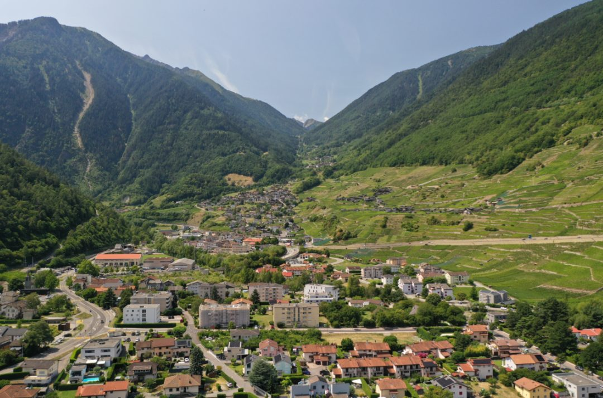

17.08.2026 · Fieldwork
Within the international LIGHT project, carried out in the Driving Urban Transitions (DUT) programme, Gdańsk Tech together with the Swiss Fondation de l’Institut de Recherche IDIAP scanned the city of Martigny with drones and photogrammetry. The material will be used to build a detailed 3D model of the city.

LIGHT, led by Justyna Martyniuk-Pęczek, PhD, DSc, Eng., Arch., Professor at Gdańsk Tech, works on the shift of cities towards healthy Positive Energy Districts. On the Gdańsk Tech side the drone survey of Martigny was carried out by Roman Ruczyński, PhD, and Nikodem Derengowski, PhD, who went to Switzerland for the measurement campaign.
Partners will use the 3D model for heat-flow simulations and innovative urban-energy solutions at city scale, and to build a digital twin of Martigny. At Gdańsk Tech the model will also support studies of sunlight and daylight.
A shared 3D model will let the partners examine different aspects of how the city works and judge more clearly how urban changes affect the environment and residents’ quality of life.
LIGHT runs from 2026 to 2028. An international consortium from Poland, Sweden, Austria and Switzerland carries it out, led by Gdańsk Tech.
LIGHT – Seeking integrated solutions for healthy Positive Energy Districts is carried out in the Driving Urban Transitions (DUT) partnership, co-funded by the European Union. The project received funding from the National Centre for Research and Development (NCBR) under DUT Call 2024.
Source: Drones and photogrammetry: a 3D model of Martigny, Faculty of Architecture, Gdańsk Tech.